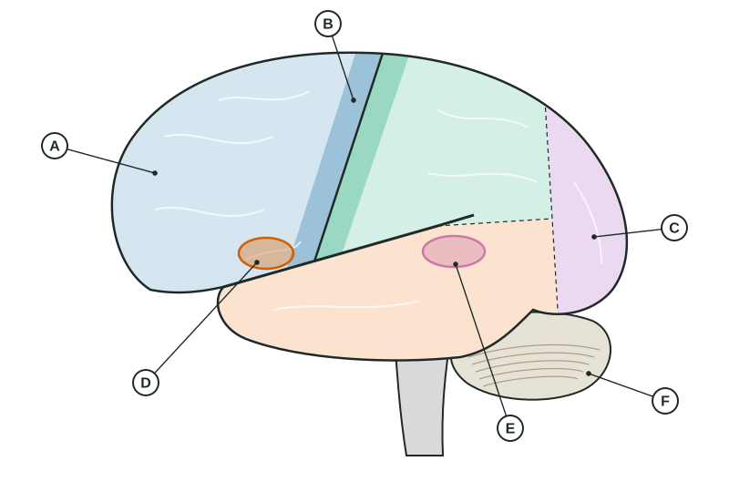

The Brain
The brainstem keeps you alive and alert, the cerebellum smooths movement, and the limbic structures handle relay, drives, memory and fear.
Part 1 · Hook
Why this matters
Part 2 · Before you start
What this builds on
Part 3 · Prerequisite check
Quick check before you start
1. Which part of a neuron is wrapped in myelin?
- The axon
- The dendrites
- The synapse
- The cell body
Show the answer
Myelin wraps the axon and speeds the action potential.
- Correct: The axon:
- The dendrites:
- The synapse:
- The cell body:
2. A study changes nothing and simply examines one unusual person in depth. What method is it?
- A case study
- An experiment
- A survey
- A correlational study
Show the answer
A case study looks at one person or a few people in depth.
- Correct: A case study:
- An experiment:
- A survey:
- A correlational study:
3. A researcher removes participants' names and uses code numbers. Which safeguard is this?
- Confidentiality
- Debriefing
- Informed consent
- The right to withdraw
Show the answer
Keeping data from being linked to a person protects confidentiality.
- Correct: Confidentiality:
- Debriefing:
- Informed consent:
- The right to withdraw:
Part 4 · See it
See it first

Part 5 · Step by step
How it works, step by step
- Signals from the eyes, ears and skin reach the brainthe thalamus relays them to the right areas of the cortex (smell is the exception)
- The occipital, temporal and parietal lobes process vision, hearing and touchassociation areas combine the pieces into meaning
- The frontal lobe plans an actionthe motor cortex sends commands to the opposite side of the body, and the cerebellum makes the movement smooth
- Damage to one region removes or weakens its jobpatterns of loss (lesions, strokes, split-brain surgery) reveal what each region does
Part 6 · Key ideas
Key ideas
- The brainstem keeps you alive: the medulla runs breathing and heart rate, and the reticular activating system controls arousal. The cerebellum coordinates balance and smooth movement.
- Four lobes of the cerebral cortex: frontal (planning, judgment; the motor cortex; Broca's area for producing speech), parietal (touch, in the somatosensory cortex), occipital (vision), temporal (hearing; Wernicke's area for understanding speech).
- Limbic structures: the thalamus relays senses, the hypothalamus keeps homeostasis and directs the pituitary, the hippocampus forms new memories, the amygdala handles fear.
- Each hemisphere controls the opposite side of the body. The corpus callosum links them; split-brain cases show that language is mostly in the left hemisphere in most people.
- Tools: case studies of damage, lesions in animal research, EEG (when, from the scalp) and fMRI (where, from blood flow). The brain rewires through neuroplasticity.
Part 7 · Misconception
A common mistake
The wrong idea: People are either left-brained (logical) or right-brained (creative).
What actually happens: The hemispheres specialize for some tasks, but they work together through the corpus callosum. Brain-imaging studies of large groups find no left-brain or right-brain types of people.
Part 8 · Check yourself
Check yourself
Exam-style questions. Anything you miss goes into your review queue.
Figure
The left hemisphere from the side, regions marked A to F

1. After a stroke, Mr. Okafor understands what people say but speaks slowly, in short, effortful phrases. Damage to which lettered region best explains this?
- D
- E
- B
- C
Show the answer
D is Broca's area, in the lower left frontal lobe. Damage there leaves understanding mostly intact but makes producing speech slow and effortful (Broca's aphasia).
- Correct: D: Right: D is Broca's area, which helps produce speech.
- E: E is Wernicke's area; damage there harms understanding, and speech stays fluent but makes little sense.
- B: B is the motor cortex strip; damage would weaken movement on the right side of the body, not specifically speech.
- C: C is the occipital lobe, which processes vision.
2. A tumor presses on region C. Which problem is the patient most likely to notice first?
- Trouble seeing part of the visual field
- Trouble hearing speech in a noisy room
- Weakness and clumsiness in the right hand
- Trouble planning and organizing the day
Show the answer
C is the occipital lobe at the back of the brain, where visual information is first processed.
- Correct: Trouble seeing part of the visual field: Right: the occipital lobe handles vision, so pressure there disturbs sight.
- Trouble hearing speech in a noisy room: Hearing is processed in the temporal lobe, below the lateral fissure.
- Weakness and clumsiness in the right hand: Hand movement is controlled by the motor cortex strip at the back of the frontal lobe.
- Trouble planning and organizing the day: Planning depends on the front of the frontal lobe, the prefrontal area.
3. Because of a small injury to region B in this left hemisphere, a patient has weakness in one hand. Which hand, and why?
- The right hand, because each hemisphere moves the opposite side
- The left hand, because each hemisphere moves the same side of the body
- Both hands, because one motor cortex is shared by the two hemispheres
- Neither hand, because region B handles touch rather than any movement
Show the answer
B is the motor cortex. Movement commands cross over, so the left motor cortex moves the right side of the body (contralateral organization).
- Correct: The right hand, because each hemisphere moves the opposite side: Right: the left motor cortex controls the right side of the body.
- The left hand, because each hemisphere moves the same side of the body: Control crosses: each hemisphere moves the opposite side, not the same side.
- Both hands, because one motor cortex is shared by the two hemispheres: Each hemisphere has its own motor cortex for the opposite side of the body.
- Neither hand, because region B handles touch rather than any movement: B is the motor cortex, in front of the central sulcus; touch is processed in the somatosensory cortex just behind it.
4. On a cold morning, Lena starts shivering and her body temperature stays near 37 °C. Which structure is keeping her internal state steady?
- The hypothalamus
- The cerebellum
- Broca's area
- The somatosensory cortex
Show the answer
The hypothalamus keeps the body in balance (homeostasis): it regulates temperature, hunger and thirst, and directs the pituitary gland.
- Correct: The hypothalamus: Right: the hypothalamus maintains homeostasis, including body temperature.
- The cerebellum: The cerebellum coordinates movement; it does not set body temperature.
- Broca's area: Broca's area helps produce speech.
- The somatosensory cortex: The somatosensory cortex registers the feeling of cold on the skin but does not regulate temperature.
5. A patient in a hospital drifts in and out of alertness and cannot stay awake, though the cortex shows no damage. Damage to which system in the brainstem would explain this?
- The reticular activating system
- The limbic system of the forebrain
- The dopamine reward center
- The association areas of the cortex
Show the answer
The reticular activating system runs through the core of the brainstem and controls arousal: waking, alertness and attention to the surroundings.
- Correct: The reticular activating system: Right: the reticular activating system controls arousal and alertness.
- The limbic system of the forebrain: The limbic system handles emotion, drives and memory, not basic wakefulness.
- The dopamine reward center: The reward center drives motivation and pleasure through dopamine.
- The association areas of the cortex: Association areas in the cortex integrate information for thinking; they are not in the brainstem.
6. A researcher wants to know which brain area becomes more active when people see familiar faces, and where it is. Which tool fits best, and why?
- fMRI, because it shows where blood flow increases as people view the faces
- EEG, because it shows exactly which small structure deep in the brain is active
- A lesion study, because it removes the face area to see what changes
- A case study, because it follows one person over many years
Show the answer
fMRI tracks changes in blood oxygen, which rise where neurons are working, so it shows where activity happens. EEG records electrical activity from the scalp: excellent timing, poor location.
- Correct: fMRI, because it shows where blood flow increases as people view the faces: Right: fMRI shows where activity increases.
- EEG, because it shows exactly which small structure deep in the brain is active: EEG is good at when activity happens but poor at pinpointing where, especially deep in the brain.
- A lesion study, because it removes the face area to see what changes: Lesioning destroys tissue; it is used in animal research, not to study healthy people viewing faces.
- A case study, because it follows one person over many years: A case study follows one person in depth; it is not a way to map activity while people look at faces.
Part 9 · Summary
Summary
Part 10 · Up next
What comes next
Part 11 · Connections